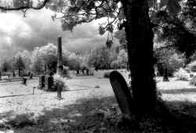

Jack
Butler
The Lady On the Train
I
And
when I see you in the hall
and you see me, and our eyes fall
to other puzzles, we
do not forget the mystery.
In
any idle interlude
I think of you, I think of you nude,
your swaying fall of soft brown hair,
that sudden intake of breath, right there,
right where Iíd kiss you . . .
II
We
have a history now, a life together.
I
have run to meet you at a cafe in rainy weather
somewhere
in Provence. In Taos, apres-ski,
no
one in the hottub but you and me,
an
icy magnum standing by. Vanilla
pralines
in Mississippi. The fountains in the villa,
eucalyptus
in the springtime sun,
sea-spray
over the old stone wall at noon,
walking
the white beach barefoot. Your
eyes,
always,
deliver a clear surprise,
profound
as cold well-water in a dry throat.
You
have a film, of course. Youíll take the boat
on
Tuesday, and probably Iíll
enjoy
the solitude, stay on a while,
finish
the novel, take the air. Espresso
at
an open-air table mornings, maybe gesso
a
canvas or two for later. That sort of thing.
No
doubt, eventually, Iíll have a fling.
Or
several. Happy.
Natural. Brief.
Intense.
Giddy
preludes to our next romance.
I
have explored your body so very thoroughly.
sliding
my hand under your silk gown at a party to find you,
and
heard you sigh wearily,
and
offer yourself, leaning back against the wall.
I
have tracked you in the dawn dew,
sleepwalking
wet clover to the horse stall,
and
there, in the straw and manure and warm stink
of
the steaming animals, before we could quite think
to
be civil or wake up . . .
III
At
last we take the express on which we met,
and
the floor swings under our feet,
the
steel wheels clucking their comforting racket,
making
each step a dance. And you attack it
so
gracefully, with such a sweet
and
fluid balance,
so
completely at ease with your multiple talents,
your
robe falling open and shut
and
open to stay,
footfall
after naked foot,
smiling,
coming my wayó
you
get the idea.
IV
Evangeline,
Judi, Georgette, Marisoló
whatever
your name is, I
have
loved you impossibly well
in
a hundred lifetimes. All of those lives will die
when
we do, and all unknown.
We
have hurt no one, betrayed no one.
This
is our greatest grace.
I
will never forget your face.
I
will leave nothing at your stone,
nothing
at all but this.
|

(photo by Kathie George) |
 ‚Üê Back to MarckBeggs.com | Arkansas Literary Forum archive, preserved as originally published
‚Üê Back to MarckBeggs.com | Arkansas Literary Forum archive, preserved as originally published{kind=link}